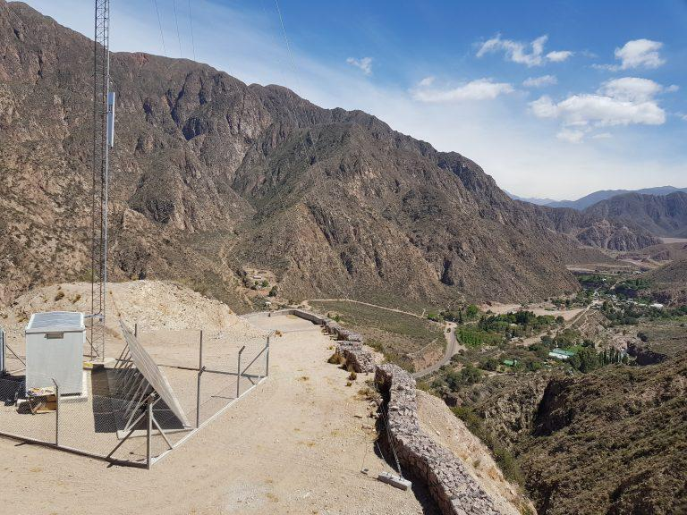
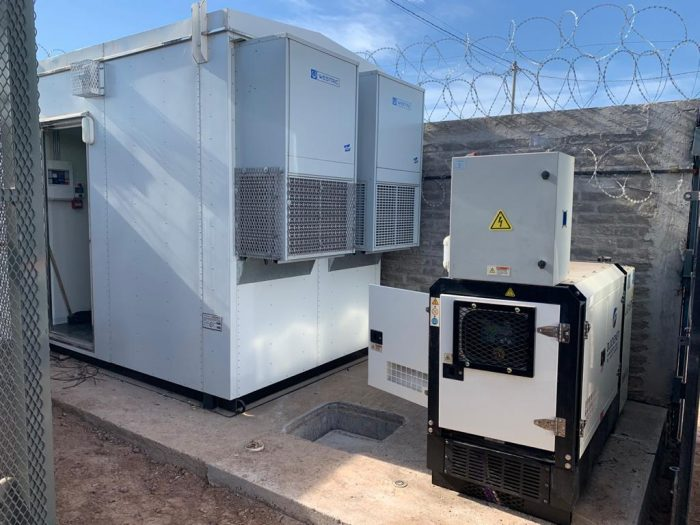
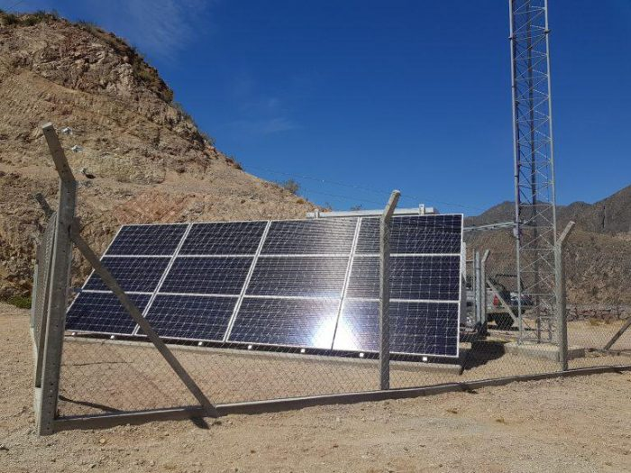
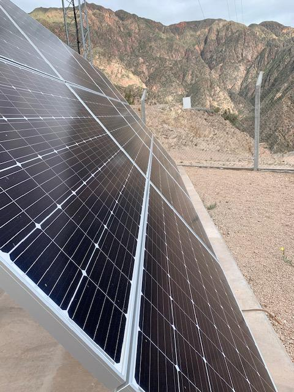
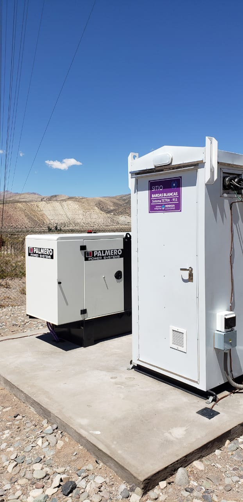
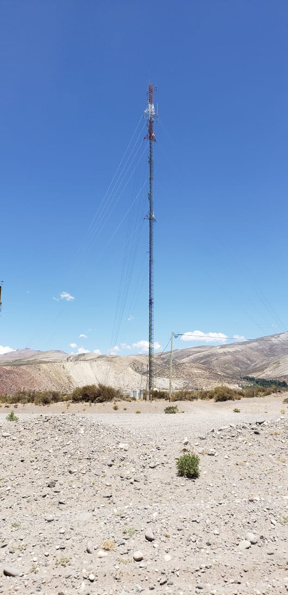

-

El Sistema de Comunicaciones de Emergencias TETRA está funcionando en casi todo el territorio provincial. Se trata de la plataforma de comunicaciones inalámbrica disponible de manera continua las 24 horas de los 7 días de la semana. Integra todas las fuerzas de seguridad y emergencia, como Policía, Bomberos, SEC, Gendarmería, Defensa Civil, municipalidades, Vialidad y Metrotranvía, permitiendo la coordinación y gestión de los recursos operativos y tácticos en forma eficiente, confiable y segura.
-

En la actualidad está operando en casi en la totalidad de la superficie de la provincia con cobertura de comunicación, tanto en zonas urbanas como rural, y se debe a los 54 sitios TETRA y a la combinación, en determinados lugares, con el sistema de comunicación analógica VHF.
-

La robustez del sistema de radiocomunicación permite continuar con la conectividad por medio de anillos y enlaces ante eventuales catástrofes naturales, como aludes en Alta Montaña o tormentas de viento y lluvia ocurridas con gran intensidad en zonas de Valle de Uco y aledañas.
-

TETRA ha sido el único sistema de comunicación que no se ha visto afectado, a diferencia de los sistemas de telefonías móviles, y es debido a los diferentes sistemas de redundancia con los que cuenta, tanto de energía y conectividad como de equipamiento, servicio y mantenimiento de red.
-

El Gobierno provincial tiene previsto un proyecto para ampliar y mejorar esta enorme red de comunicaciones, como también el proceso de inversión continua para mantener la red operativa y en óptimas condiciones de funcionamiento.
-

Más características
La plataforma es de vital importancia, ya que al ingresar un llamado de emergencia al 911 y generarse un suceso, las fuerzas de emergencia se comunican internamente mediante el sistema para la resolución. Ofrece suscriptores de distintas agencias, y cada uno de ellos está georreferenciado en la provincia.
Su tecnología permite una comunicación de voz en tiempo real entre los equipos TETRA y hacia y desde los centros de control operados por los despachadores, ubicar geográficamente a los equipos TETRA, transmitir datos y mensajes y grabar todas las comunicaciones.
Las capacidades no se comparan con el resto de los sistemas. TETRA fue diseñado de forma tal que nunca se congestiona. Tiene posibilidades de organizar las comunicaciones en flotas o grupos, y opera diferentes prioridades teniendo contemplada una prioridad máxima de emergencia, es decir que las comunicaciones de tales envergaduras se establecen sin importar la ocupación del sistema.